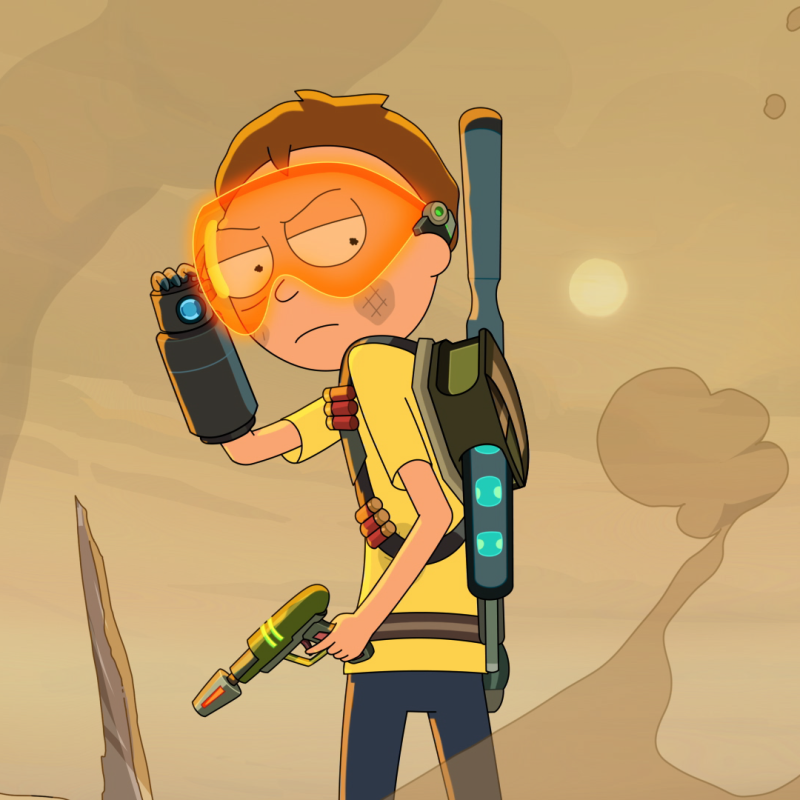

Rick and Morty
aventuras da família Smith
Apesar de genial, Rick tem sofre de alcoolismo e possui uma relação conflituosa com sua família, fruto da sua visão cínica da vida e seu egoísmo. Por outro lado, Morty está longe de ter o intelecto do seu avô, mas é o único capaz de fazê-lo ser um pouquinho mais gentil.

Com sua arma capaz de criar portais para viajar no tempo-espaço, Rick leva Morty para explorar todos as absurdas formas de vida que o universo é capaz de sustentar.
Rick é um cientista louco e amoral que, após desaparecer por 20 anos, retorna para a sua familia e começa a sair em aventuras fatais e em grande parte, traumatizantes, com seu neto, Morty Smith.
Morty mostrou ser um adolescente incrivelmente ansioso e submisso. No entanto, depois de muitas supostas aventuras com Rick, Morty aparentemente se tornou mais confiante e independente, em vez de um mero ajudante.
- Surgiu: 02/12/2013
- Temporadas: 7 temporadas
- Duração: 20 - 23min
- Criadores: Justin Roiland, Dan Harmon
Rick and Morty foi criado por Justin Roiland e Dan Harmon. A dupla se conheceu no Channel 101, um festival mensal de curta-metragens sem fins lucrativos em Los Angeles.
Neste festival, os participantes enviam um curta-metragem no formato de um piloto, e uma plateia ao vivo fica responsável por decidir quais pilotos continuam como uma série.